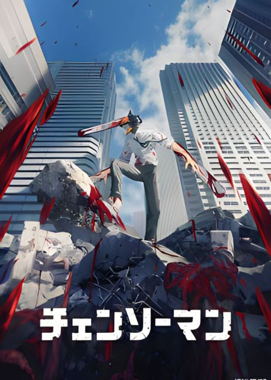

CHI SONO?

Ciao, io sono Matteo! Sono un ragazzo di 16 anni e frequento la classe 3G dell' istituto superiore Ettore Majorana. Non pratico sport anche se mi piace il basket e il tennis. Sono nato a Palermo e continuo a viverci. I miei colori preferiti sono principalmente quelli scuri come il nero, il viola scuro e tutti le sfumature scure del blu, i colori chiari mi piacciono pure, però li preferisco quando sono accoppiati con altri colori scuri, come il rosso e il nero. Sono un ragazzo gentile, simpatico e molto timido anche se sto facendo del mio meglio perchè mi sono reso conto che ho perso molte opportunità proprio per questo, cerco sempre di far ridere le persone e di essere di aiuto, metto sempre i bisogni delle altre persone prima dei miei e sono molto leale. Un'altra cosa che mi piace è viaggiare, ho visitato molti paesi in sicilia come Siracusa, Memfi, Alcamo e altri. Ho anche visitato altre città fuori dalla Sicilia come Verona, Venezia, Bologna, Mantova e Riva del garda. Mi piace anche leggere manga e giocare ai videogiochi, non ho un manga preferito ma la mia serie di manga preferiti sono quelli Tatsuki Fujimoto in particolare Chainsaw Man
Mi piace un sacco perchè prende concetti semplici come i diavoli e i guerrieri dell'apocalisse ma ridisegnati e rimescolati al mondo di oggi alla perfezione. Il mio gioco preferito invece è Red Dead Redemption II un videogioco action-adventure openworld a tema western del 2018, sviluppato e pubblicato da Rockstar Games. è il mio gioco preferito perchè mi piace molto l'ambientazione, lo sviluppo della storia e dei personaggi. La trama è fantastica, la grafica e la cura ai dettagli sono i migliori tra tutti i videogiochi, in più è anche molto lungo, con ben 40 ore di gioco e la possibilità di fare molto altro come pescare, cacciare, rapinare ecc. rendono il gioco perfetto. Ho anche una grande passione per lo spazio e l'astronomia e per tutte le materie scientifiche, ci sono molto appasionato sin da quando ero piccolo, vedevo spesso su youtube video di spazio o di come nasce il nostro pianeta e tutt'ora mi piace sapere di più. Non credo a niente ne alla religione, ne al destino, ne all'astrologia, essendo molto appasionato della scienza ho trovato a tutto sempre una ragione logica e senzata, per me Dio o il fato non sono logici o sensati, tuttavia però rispetto profondamente tutti i cristiani. Non faccio differenza per colore della pelle o per orientamento sessuale, ho una mente molto aperta e rispetto tutti fino a quando rispettano me. Ascolto musica di tutti i generi, mi piace il metal, pop, hip hop, rap, classica, R&B, praticamente tutto tranne la muscia italiana, non la ascolto molto spesso, non so il vero motivo e che semplicemente non mi ispira molto, ho sempre ascoltato canzoni inglesi o di altri paesi.
CHE COSA FACCIO?
Attualmente studio ad una scuola superiore precedentemente citata, vado al terzo anno (ancora non sono stato bocciato), non pratico sport però faccio palestra da tre anni a casa e quest'anno inzierò a farlo in una palestra pubblica. Il motivo per cui faccio palestra e perchè non mi piace il mio aspetto fisico, quando ho inizaito a fare palestra pesavo 35KG ora invece 52KG e in più ho un corpo più tonico e mi sta piacendo, non voglio avere un fisico troppo grosso ma neanche troppo magro, semplicimente voglio guardarmi allo specchio e piacermi. Non faccio molto nella vita, non suono nessun strumento musicale, non faccio corsi pomeridiani o qualsiasi attività, tranne leggere, giocare e studiare, quelli li faccio spesso, tranne l'ultimo.